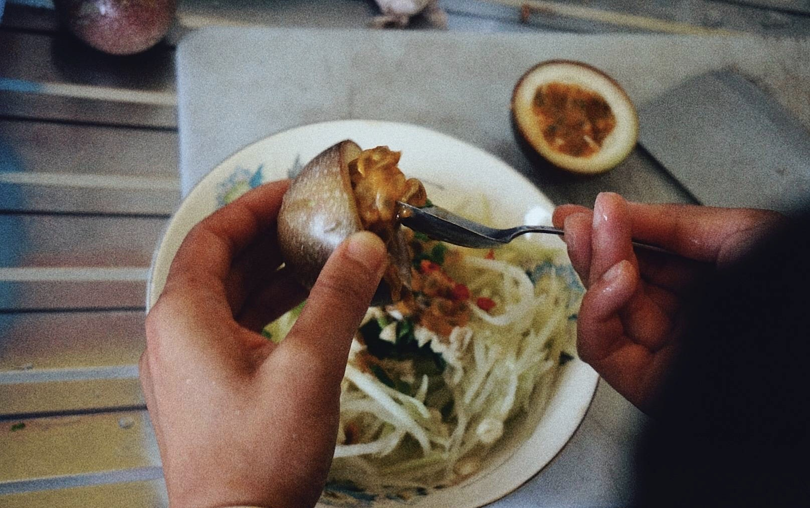

PAPAYA SALAD
WHAT YOU PREPARE
1 Papaya
Chopped red chili
Ground peanut
1 Passion fruit
Half lime
1/2 salt
3 tea spoon Fish oil
INSTRUCTIONS
1. Slice the papaya
2. Store the slices in cold water
3. Add chili, peanut, passion fruit juice, lime juice and salt
4. Add salt and fish oil at last
RECIPE 02
HOME